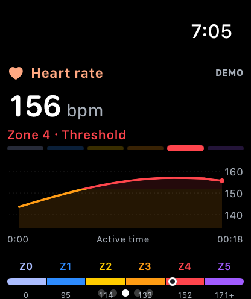
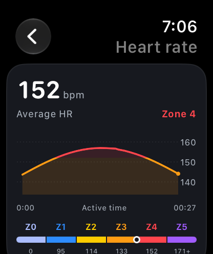

INDOOR TRAINING. FULLY CONNECTED.
BUILT FOR APPLE WATCH / 01.00MAKE EVERYREVOLUTIONCOUNT.
Your bike knows the work.
Your Watch knows the effort.
Bring the whole ride together.
THE BIKE.
THE WATCH.
THE WHOLE
STORY.
Two sides of your effort.
Finally on the same page.
BikeTrack connects compatible Bluetooth equipment directly to Apple Watch. Power and cadence meet heart rate and active energy. Your whole session, right where you need it.
Find your setupYour equipment
POWER + CADENCE + SPEED
BikeTrack
THE FULL PICTURE
Apple Health
YOUR WORKOUT, REMEMBERED
ALL SIGNAL.
FULL FOCUS.
From the first pedal stroke
to that last deep breath.
See power, heart rate, cadence, and distance at a glance. Your equipment’s measurements and your Watch’s readings, together in one focused view.
Put your effort in context with live heart-rate and power zones. Set your maximum heart rate and cycling FTP to make those zones personal.
Explore your averages, peaks, charts, and time in each zone. Save authorized data to Apple Health, with your latest 100 summaries kept on your Watch.


FIND YOUR
SWEET
SPOT
There’s more to a ride than a number.
See how your effort unfolds with personal heart-rate and cycling power zones.
The shape of a sustained effort.
70–80% OF MAX HRTap a zone to explore. Example max HR: 190 bpm.
Your in-app zones use the thresholds you set.
YOUR WORKOUT.
YOUR BUSINESS.
You put in the work. You keep the data. BikeTrack stores workouts on your Watch and in Apple Health, subject to your Apple settings.
- No account.
- No subscription.
- No analytics.
GOOD TO
GO?
An Apple Watch. Compatible equipment.
A little room to move.
What do I need to get started?
An Apple Watch running watchOS 11 or later. Connect compatible Bluetooth equipment, allow the Health permissions you want to use, and start a session. No account required.
Will it work with my bike?
BikeTrack supports standard Bluetooth FTMS Indoor Bike Data, Cycling Power, and Cycling Speed & Cadence. Available readings depend on your equipment. Specific bike models have not yet been physically verified, so model compatibility is not guaranteed.
Can I track indoor runs and walks?
Yes. Record indoor cycling, running, and walking. Treadmills must broadcast standard FTMS Treadmill Data to share equipment metrics. You can also record without equipment using the measurements available from your Watch.
Where does my workout go?
With your permission, BikeTrack saves workouts and supported measurements to Apple Health and Fitness. Your latest 100 workout summaries and chart data also stay in local storage on your Watch.
Does it control resistance or sync to Strava?
BikeTrack reads equipment metrics; it does not control resistance or ERG mode. Direct Strava export and ANT+ are not included. You can use a separate Health-compatible exporter for Strava. BikeTrack connects to one Bluetooth peripheral at a time.
When can I get BikeTrack?
BikeTrack is coming to the App Store as a free app for Apple Watch. The first release is awaiting Apple’s review. You can explore the source and follow progress on GitHub ↗.